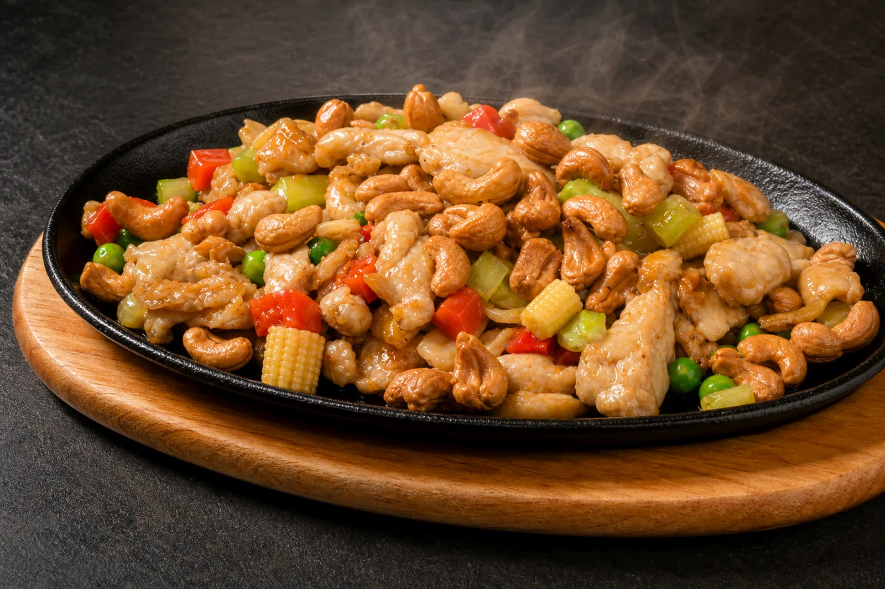
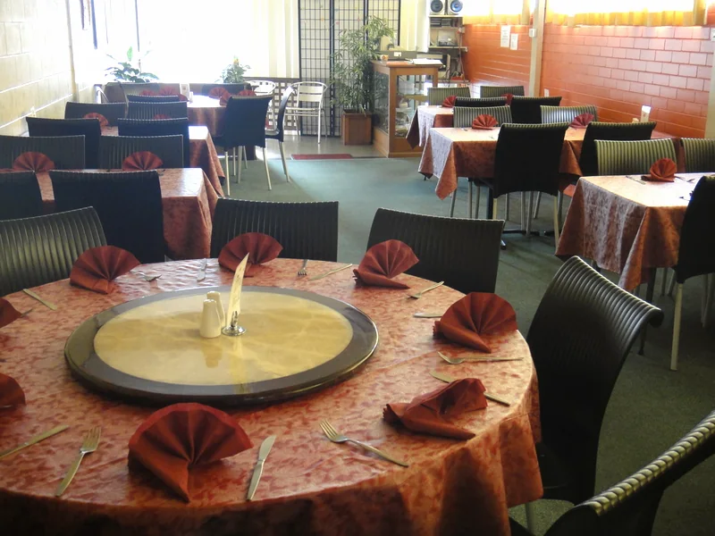
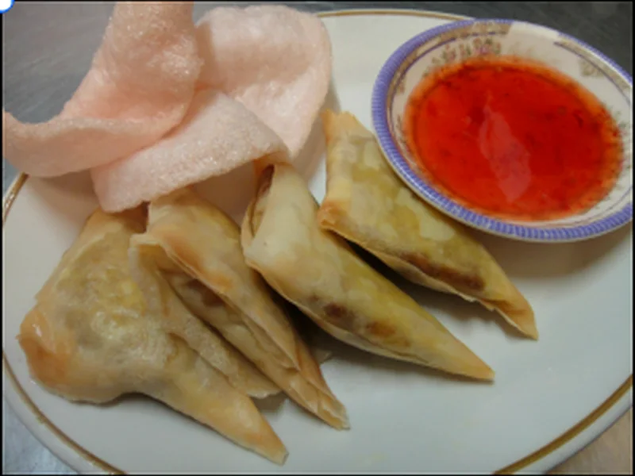
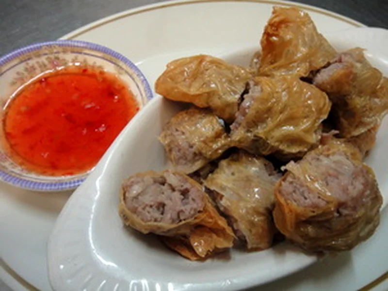
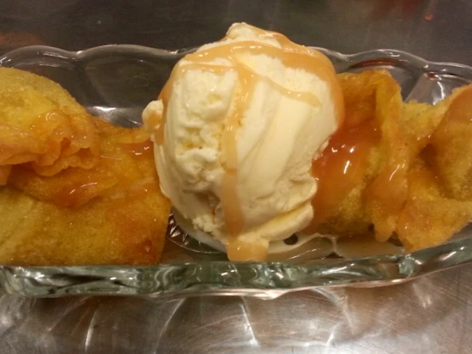
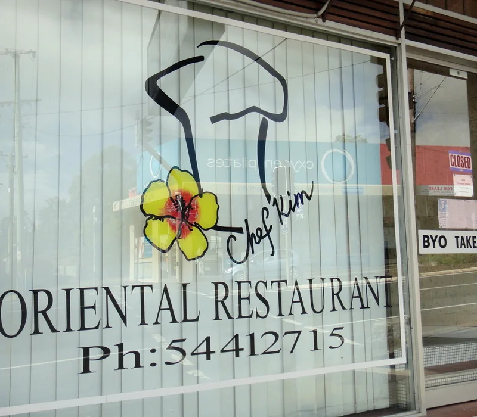

Dim Sims (6)
Steamed with soy or fried with sweet & sour sauce.

Nambour · Dine-in & takeaway
Oriental cooking on Currie Street since 1998
Malaysian and Chinese favourites, BYO dining and more than 100 meals from Kim and Veronica's long-running kitchen.
A local original
The Currie Street premises began as a Chinese restaurant in the 1960s. Chef Kim has carried the story forward since 1998 with familiar service and a broad Oriental menu.

Around the table




Opening hours
Kitchen closes around 7:10pm. Place takeaway orders before 7pm for later collection. No walk-in dining after 6:30pm.
15 Currie Street
Nambour QLD 4560
Dine in or take away
Table booking is highly recommended. BYO for dine-in with free corkage; a 1.1% credit-card surcharge and 15% public-holiday surcharge apply.